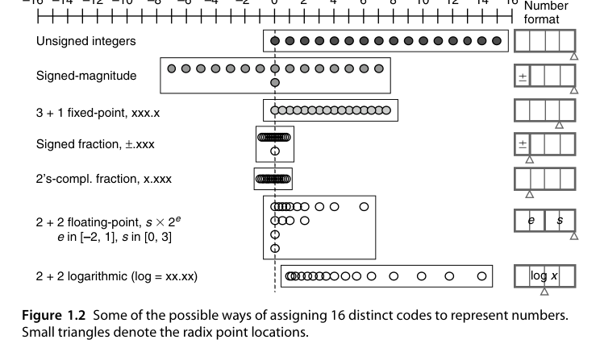
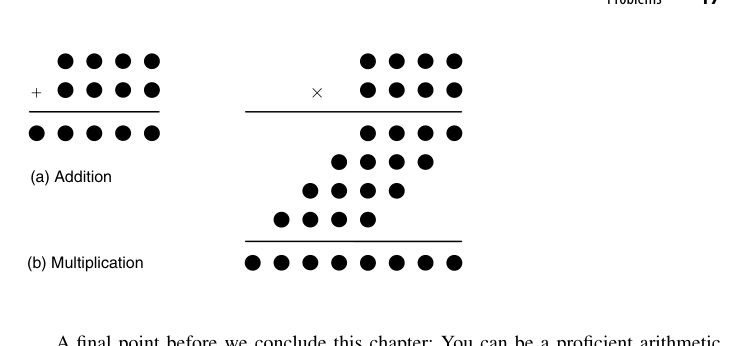

第1章 数与算术（Numbers and Arithmetic）
本章导读
这一章回答一个看似幼稚、实则深刻的问题：计算机里的”数”到底是什么？ 我们从小习惯的十进制纸笔算术，到了硅片上必须重新发明一遍——用比特编码、用逻辑门实现、在有限的面积与延迟预算内完成。本章是全书的地图：它告诉你为什么计算机算术（Computer Arithmetic）是一门独立的学科，而不是”把小学算术写成 Verilog”那么简单。
1.1 什么是计算机算术？（What is Computer Arithmetic?）
计算机算术研究的是算术运算的算法与硬件实现之间的映射关系。同样一个加法，可以是一串行波进位的全加器（慢但省面积），也可以是一棵并行前缀树（快但贵）——数学上完全等价，物理上判若云泥。
换句话说，这一学科的输入是”要算什么”，输出是”用什么电路算、要花多少钱、多久能算完”。它横跨三个层次：最上层是数的表示（第 2-4 章），中间层是运算算法（第 5-16 章加减乘除开方），最下层是实现技术（第 25-28 章流水、低功耗、可重构）。三个层次相互牵制：换了表示，算法就要重写；换了算法，电路结构与时序就得跟着变。
做芯片的人常说”算法即结构，结构即性能”。一个算术部件的延迟、面积、功耗，本质上由你选择的算法决定，逻辑综合工具能做的优化只是锦上添花。这就是本书反复出现的主线：先选算法，再谈实现。
评价一个算术部件，业内有三个公认的度量口径，本书后文会反复拿来比较各种方案：
- 延迟（latency）：从输入有效到输出有效的时间。早期文献用”门级延迟数”计量，现代设计更常用 FO4（一个反相器驱动四个相同反相器的延迟）或直接的 ps/ns。
- 面积/成本（cost）：晶体管数、标准单元数，或版图意义上的 \(\lambda^2\) 面积。规则性（regularity）往往比纯粹的单元数量更决定实际面积，因为布线拥塞会吃掉大量硅片。
- 功耗/能耗（power/energy）：动态功耗 \(\propto C V^2 f\)，算术部件的功耗大头往往不是有用的计算，而是毛刺（glitch）与冗余翻转（第 26 章会专门讨论）。
三者构成一个不可能三角：想延迟低就得并行铺硬件，面积和功耗跟着涨；想面积小就串行复用，延迟又上去了。所有算术设计，本质上都是在这个三角里挑一个点。
几个贯穿全书的核心矛盾在本章就已埋下伏笔：
- 延迟 vs. 面积：串行（bit-serial）方案用 1 位硬件反复算 \(k\) 次；并行方案一次铺开 \(k\) 位硬件。这是算术电路设计的第一性权衡。
- 规则性 vs. 性能：行波进位加法器（ripple-carry adder）结构极其规整、版图友好，但进位链是它的阿喀琉斯之踵。
- 精确性 vs. 成本：浮点运算的舍入（rounding）让”正确”本身变成一种需要精心设计的行为。
1.2 动机实例（Motivating Examples）
原书用几个著名的工程事故说明”算术出错，代价惨重”。这些都是业界公开的经典案例：
- Pentium FDIV 缺陷（1994）：Intel 早期 Pentium 处理器的浮点除法查找表中有 5 个条目漏填，导致特定操作数下除法结果精度受损，最终 Intel 召回处理器，损失约 4.75 亿美元。它直接催生了形式验证（formal verification）在算术单元验证中的大规模应用。
- Ariane 5 首飞爆炸（1996）：火箭惯性参考系统将 64 位浮点速度值转换为 16 位有符号整数时发生溢出（overflow），控制计算机崩溃，火箭升空 37 秒后解体。数制转换与表示范围不是细枝末节，是性命攸关。
- 爱国者导弹时钟漂移（1991）：内部时钟用 0.1 秒的近似二进制小数累加计时，连续运行约 100 小时后累计误差约 0.34 秒，导致拦截窗口计算错误。有限精度表示的舍入误差会随时间累积——这是第 19 章误差分析要系统处理的问题。
把这三个案例放在一起看，会发现它们恰好是三类不同性质的错误，而不是同一个错误的三种说法：
- 实现错误（Pentium）：算法正确、规格正确，只是硬件里的常数表填错了。这类问题靠形式验证与穷举/定向测试来抓，也促使业界把 SRT 除法表之类”手写常数”纳入严格的等价性检查流程。
- 范围错误（Ariane 5）：数据本身没错，错在把大动态范围的量搬进了窄容器。这是表示与接口规格问题——那段转换代码在 Ariane 4 上永远不会溢出，换到更快的 Ariane 5 上就爆了。复用代码时”物理量变了但位宽没变”是极常见的坑。
- 累积误差（爱国者）：每一步的舍入都微不足道，但 \(10^6\) 步之后就不可忽略。这是数值分析的范畴，需要在算法设计阶段就给出误差界，而不是事后调精度。
这三个事故恰好对应本书的三大主题：验证（实现要对）、表示（范围与编码要匹配）、误差（有限精度的数学性质要心里有数）。读后续章节时不妨时常回想这三个例子。
工程上的一条硬经验：算术部件的 bug 不会因为”概率很低”而消失。一个 64 位乘法器的输入空间是 \(2^{128}\)，随机仿真能覆盖的比例小到荒谬；而 Pentium 那 5 个坏条目，触发概率同样低到几乎测不出来，却真实存在。所以算术验证必须靠结构化的方法（分块等价性检查、形式化证明、代数性质的定向激励），而不是靠堆随机测试。
1.3 数及其编码（Numbers and Their Encodings）
一个数（number）是抽象的数学对象；它在机器里的比特串只是它的一种编码（encoding）。同一个数 25，可以编码为：
| 编码方式 | 比特串 | 说明 |
|---|---|---|
| 二进制原码 | 00011001 |
标准的 positional 编码 |
| BCD（8421 码） | 0010 0101 |
每位十进制数字独立编码，金融系统常用 |
| 独热码（one-hot） | 25 位中只有 1 位为 1 | 极端冗余，状态机编码里能看到它的影子 |
编码的代价会在运算电路里连本带利地还回来。以 BCD 为例：两个 BCD 数字相加，若 4 位二进制和大于 9，就必须加 6 修正并产生十进制进位：
\[ \text{若 } s_4 > 9:\quad s \leftarrow s + 6,\quad c_{out} \leftarrow 1 \]
原因在于 4 位二进制的进位发生在 16，而十进制需要它在 10 发生，两者相差 6。于是 BCD 加法器 = 二进制加法器 + 一个”和 > 9”检测电路 + 一个加 6 的多路选择器。对比之下，纯二进制加法器没有这一级修正。这就是”编码决定运算电路”最直观的注脚。
编码与运算电路是成对出现的。选了 BCD 编码，加法器就要处理”逢十进一”的修正逻辑；选了二进制，修正逻辑消失但人机接口要做进制转换。没有免费的编码——你省下的每一处硬件，都在别处以复杂度还回来。
同样的道理也适用于定点小数：把一个 \(k\) 位编码解释为”整数”还是”分数”，硬件完全一样，只是小数点的约定位置不同。定点乘法中，两个 \(k\) 位小数相乘得到 \(2k\) 位结果，其中低 \(k\) 位是”多余精度”，通常需要截断或舍入（第 17 章）。硬件不变，语义变了——这也是”数是什么由约定决定”的体现。
原书 Fig. 1.2 用同一组 4 位编码展示了四种完全不同的解释：无符号整数 \([0,15]\)、原码有符号整数 \([-7,+7]\)（含 \(\pm 0\)）、3 位整数 + 1 位小数的定点格式（\(0\) 到 \(7.5\)，步长 \(0.5\)）、以及有符号分数（原码 \([-0.875,+0.875]\)，2 的补码 \([-1,+0.875]\)）。同样的 16 个码字，换个解释就是四个不同的数系——读硬件文档时，先问”这个字段按什么解释”永远是第一步。
1.4 定基位置数制（Fixed-Radix Positional Number Systems）
一个 \(k\) 位整数、基数（radix）为 \(r\) 的位置数制写作：
\[ x = \sum_{i=0}^{k-1} x_i \cdot r^i, \qquad x_i \in \{0, 1, \dots, r-1\} \]
二进制（\(r=2\)）统治数字硬件的原因很物理：两个稳定状态（高低电平）最容易可靠制造与区分。但”基数”这个概念远不止二进制：
- 八进制/十六进制：本质上是二进制的”压缩书写”，3 位/4 位二进制一组，方便人读，不改变硬件本质。
- 十进制硬件：IBM Power 系列处理器内置了十进制浮点运算单元（DFP），就是为了金融场景”0.1 元不能被二进制精确表示”这类痛点。
- 负基数（negative radix，如 \(r=-2\)）在数学上自洽且有趣，但工程上没有优势，了解即可。
那么”最优基数”是多少？这是一个可以量化的问题。设要表示的最大数为 \(M\)，所需位数 \(k = \log_r M\)；若每一位数字的硬件复杂度大致正比于数字集合的大小 \(r\)，则总成本
\[ C(r) \propto k\,r = r\log_r M = \frac{r}{\ln r}\,\ln M \]
对 \(r\) 求导：
\[ \frac{d}{dr}\left(\frac{r}{\ln r}\right) = \frac{\ln r - 1}{(\ln r)^2} = 0 \;\Longrightarrow\; r = e \approx 2.718 \]
也就是说，从纯成本角度，基数取 \(e\) 附近最划算，实际就是 2 或 3（\(r/\ln r\) 在 \(r=2\) 与 \(r=4\) 处都是 2.885，在 \(r=3\) 处是 2.731，三者差别不到 6%）。这解释了为什么基数 2 稳坐主流、基数 4 在高基乘法/除法里同样常见（第 10、14 章），而更大的基数（8、16）只在”每次迭代要吞掉更多位”的串行算法里才划算。
上面的 \(r=e\) 结论建立在”每位成本 \(\propto r\)“这个很粗的假设上。真实 VLSI 里还要算布线、管脚、时序收敛，所以实践中基数的选择往往由算法结构（比如 Booth 重编码天然适配基数 4）而非这条渐近公式决定。公式的价值在于告诉你：不要指望靠提高基数获得数量级的收益。
1.5 进制转换（Number Radix Conversion）
进制转换是每次”人机交互”都要做的事。两类基本方法：
除基取余法（用于整数， radix \(r\) → 目标基数 \(R\)）：反复用新基数 \(R\) 去除，余数从低位到高位依次给出新表示的各位。例如十进制转二进制，就是不断除 2 取余。
乘基取整法（用于小数）：反复用 \(R\) 去乘小数部分，整数部分从高位到低位依次给出。
举一个本书后面还会遇到的例子——把 \((0.1)_{10}\) 转成二进制：
\[ 0.1\times2 = \mathbf{0}.2,\quad 0.2\times2 = \mathbf{0}.4,\quad 0.4\times2 = \mathbf{0}.8,\quad 0.8\times2 = \mathbf{1}.6,\quad 0.6\times2 = \mathbf{1}.2,\ \dots \]
得到的比特序列是 \(0,0,0,1,1,0,0,1,1,\dots\)，即
\[ (0.1)_{10} = (0.000\overline{1100})_2 \]
它永远不会终止。因为 \(0.1 = 1/10 = 1/(2\times5)\)，分母含因子 5，而二进制小数只能精确表示分母为 \(2^k\) 的分数。一般判据是：
\[ \text{有限十进制小数 } \frac{a}{10^m} \text{ 能被有限二进制表示} \iff \frac{a}{10^m}\cdot 2^{k} \in \mathbb{Z} \text{ 对某个 } k \iff 5^m \mid a \]
大多数有限十进制小数不能被有限二进制精确表示（0.1 是最著名的例子）。这意味着进制转换对小数而言通常是有损的。做金融、计量相关硬件时，这个性质必须在系统规格阶段就讲清楚，否则就是下一个 Ariane。
硬件上，定点数的进制转换可以用移位-累加结构实现：把目标基数 \(R\) 的幂次权重预先存好，逐位累加即可，本质是一个小型的乘加阵列。更紧凑的做法是把它写成 Horner（秦九韶）形式，从最高位开始递推：
\[ x = ((\cdots((x_{k-1})\cdot r + x_{k-2})\cdot r + \cdots)\cdot r + x_0) \]
每步一个”乘 \(r\) + 加一位”，正好对应一个移位-加法单元，\(k\) 步完成。反过来，当两个基数互为整数次幂时（2 ↔︎ 8 ↔︎ 16），转换退化成纯重分组，零硬件成本——这就是十六进制只是”书写便利”的原因。
1.6 数表示的分类（Classes of Number Representations）
本书把数的表示方法组织成一个分类空间，后续章节逐一展开：
| 类别 | 代表 | 解决的问题 | 代价 |
|---|---|---|---|
| 原码（signed-magnitude） | 第 2 章 | 直观、乘除符号处理简单 | 加法不统一、有 \(\pm 0\) |
| 补码（complement） | 第 2 章 | 加减法统一、硬件最简 | 范围不对称、取负可能溢出 |
| 冗余数系（redundant） | 第 3 章 | 消除进位传播，\(O(1)\) 加法 | 编码浪费、比较/转换复杂 |
| 剩余数系（RNS） | 第 4 章 | 大数运算通道化、天然并行 | 比较/除法/溢出检测困难 |
这个分类不是任意罗列，而是沿着一条明确的线索推进：从”一个数一个码”走向”一个数多个码”。原码和补码都是一一映射（除了 \(\pm 0\) 这个小瑕疵），冗余数系和 RNS 则是有意引入多对一映射，用编码空间的浪费换取运算的并行性。理解这一点，后面两章的”怪异”设计就有了统一的解释。
为了在后续章节里直观描述”哪些位参与哪些运算”，本书全程使用点记号（dot notation）：用一个圆点表示一个比特（或一个数位），按权重排成阵列，纵向表示不同操作数。原书 Fig. 1.4 给出了基本约定；第 2 章会引入空心点表示负权重位（negabit），第 3 章再扩展到双位、单位等记号。点记号是本书的”电路图语言”，读懂它，后面所有乘法阵列、压缩树的图就都能一眼看懂。
计算机算术的一切设计都可以追溯到两个选择：用什么编码表示数，用什么算法实现运算。本章建立了这两个维度的基本词汇表。第 2-4 章把”表示”这个维度讲透，第 5 章起进入”运算”。
原书插图

